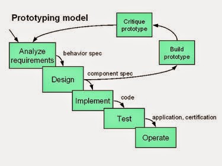

Pengertian Metodologi Prototyping
Prototyping perangkat lunak adalah salah satu metode siklus hidup sistem yang didasarkan pada konsep model bekerja
(working model). Tujuannya adalah mengembangkan model menjadi sistem final. Artinya sistem akan dikembangkan lebih cepat dari pada
metode tradisional dan biayanya menjadi lebih rendah. Ada banyak cara untuk melakukan prototyping, begitu pula dengan penggunaannya.
Ciri dari metode ini adalah pengembang dan pelanggan dapat melihat dan melakukan pengerjaan dengan bagian dari sistem komputer dari sejak awal proses pengembangan.

Tahapan Metodologi Prototyping
-
Analisa kebutuhan : Di tahap ini pengembang melakukan identifikasi software dan semua kebutuhan sistem yang akan dibuat.
-
Membangun prototyping : Membangun prototyping dengan membuat perancangan sementara yang berfokus pada penyajian kepada pelanggan (misalnya dengan membuat input dan format output).
-
Evaluasi prototyping : Evaluasi ini dilakukan untuk mengetahui apakah prototyping sudah sesuai dengan harapan pelanggan.
-
Mengkodekan sistem : Pada tahap ini prototyping yang sudah disetujui akan diubah ke dalam bahasa pemrograman.
-
Menguji sistem : Di tahap ini dilakukan untuk menguji sistem perangkat lunak yang sudah dibuat Pengujian.
-
Evaluasi Sistem : Perangkat lunak yang sudah siap jadi akan dievaluasi oleh pelanggan untuk mengetahui apakah sistem sesuai dengan yang diharapkan.
-
Menggunakan sistem : Perangkat lunak yang sudah diuji dan disetujui oleh pelanggan siap digunakan.